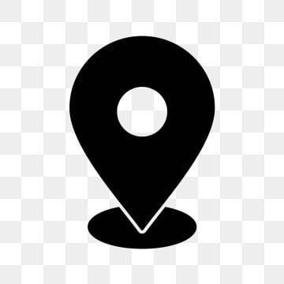

Cipész és Kulcsmásoló Kapuvár
Török Zoltán cipészmester

Török Zoltán cipészmester
Török Zoltán cipész és kulcsmásoló vagyok. Már 35 éve vagyok a szakmába ... A vállalkozásom a Veszkényi utca 20 szám alatt, a családi házam mellett külön bejárattal található meg.
Talpalás
Talpragasztás
Bélésjavítás
Húzózár csere
Szárszűkítés
Egyéb
Hagyományos ajtókulcsok, postaláda-, lakat- és kapukulcsok másolása.
Táska javítás
Övjavítás
Bőrkabátjavítás
Farmerjavítás
Speciális talpbetét készítés
Kések–ollók élezése
Turkáló
Hétfő: 8:00 – 12:00, 13:00 – 17:00
Kedd: 8:00 – 12:00, 13:00 – 17:00
Szerda: 8:00 – 12:00, 13:00 – 17:00
Csütörtök: 8:00 – 12:00, 13:00 – 17:00
Péntek: 8:00 – 12:00, 13:00 – 17:00
Szombat: 8:00 – 12:00
Vasárnap: Zárva
Telefonszám: +36/70/773/9913
 E-mail: zoltant7691@gmail.com
E-mail: zoltant7691@gmail.com
 Cím: Kapuvár, Veszkényi utca 20
 Facebook:
Facebook – Török Zoltán
Facebook:
Facebook – Török Zoltán
Az üzlet előterébe turkálót alakítottam ki, ahol cipőket, táskákat, öveket, pólókat, pulcsikat, farmerokat, szabadidő ruhákat, kabátokat valamint sok más dolgot találhat az ember.